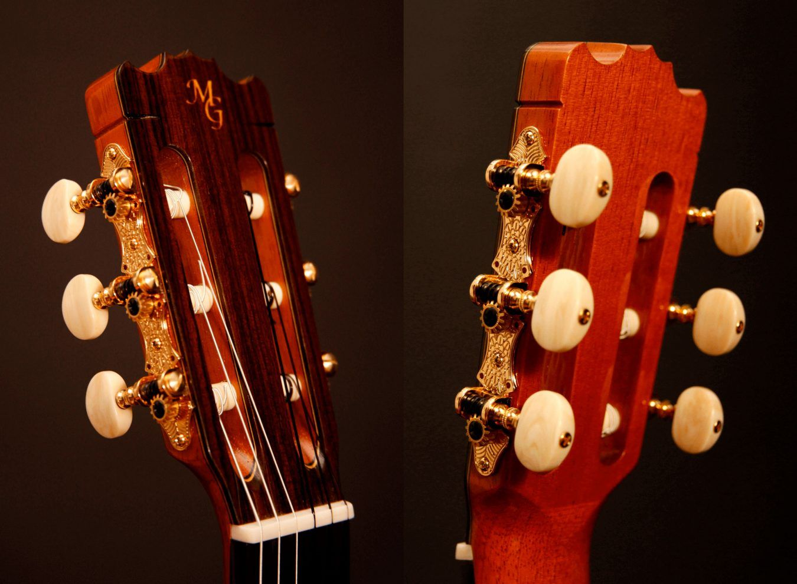
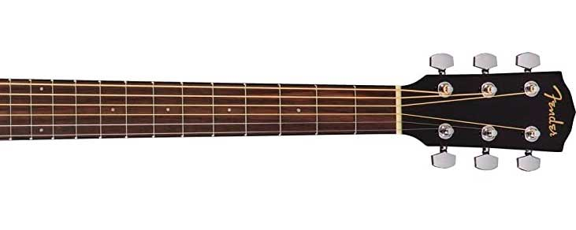
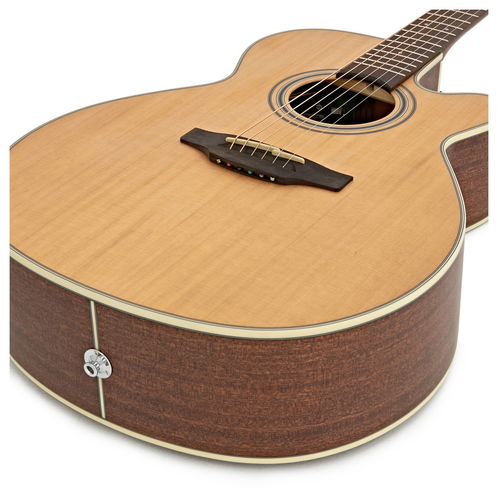
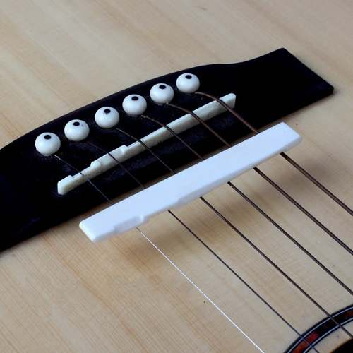
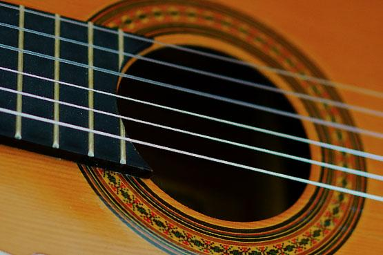

Partes de una Guitarra Acústica
1. La Cabeza (Headstock)
Funciones: Sostener las clavijas y afinar las cuerdas.Partes incluidas:
- Clavijeros (Tuners): Mecanismos que ajustan la tensión de las cuerdas.
- Ceja (Nut): Pequeña pieza de hueso, plástico o grafito que guía las cuerdas hacia el mástil.

2. El Mástil (Neck)
Funciones: Permite pisar las cuerdas para formar acordes y notas.Partes incluidas:
- Diapasón (Fretboard): Superficie de madera (típicamente palo rosa o ébano) donde se presionan las cuerdas.
- Trastes (Frets): Barras metálicas que dividen el mástil en semitonos.
- Alma (Truss Rod): Varilla interna que regula la curvatura del mástil.
- Marcadores de posición (Inlays): Puntos o diseños que ayudan a ubicarse en el mástil (ej. en los trastes 3, 5, 7, 9, 12).

3. La Caja de Resonancia (Body)
Funciones: Amplifica el sonido de las cuerdas.Partes incluidas:
- Tapa armónica (Soundboard): Generalmente de abeto (spruce) o cedro, es la parte más importante para el sonido.
- Aros (Sides): Lados de la guitarra, comúnmente de caoba o palo rosa.
- Fondo (Back): Parte trasera, suele ser del mismo material que los aros.
- Boca (Sound Hole): Abertura por donde sale el sonido.
- Puente (Bridge): Donde se anclan las cuerdas.

4. El Puente (Bridge)
Funciones: Sostiene las cuerdas y transfiere su vibración a la caja Partes incluidas:- Saddle (Silla): Ajusta la altura de las cuerdas (acción).
- Pins (Tacos de puente): Fijan las cuerdas en el puente (en guitarras con cuerdas de nylon, a veces se anudan).

5. Las Cuerdas (Strings)
Materiales:- Acero (Steel): Para guitarras acústicas de cuerdas de metal (sonido brillante).
- Nylon: Para guitarras clásicas (sonido cálido).
- 1ra (más delgada, aguda) → 6ta (más gruesa, grave).